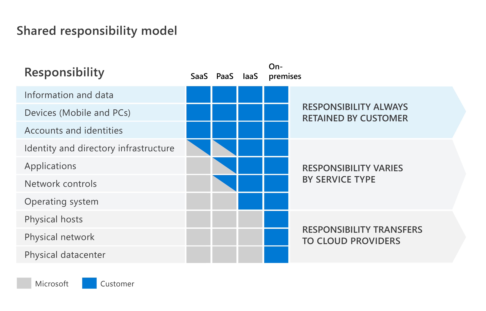

Microsoft 365 Fundamentals
INTRO TEXT HERE ...
At a Glance
At a Glance
site map
Module 1 - Describe Microsoft 365 core services and concepts
|- What is Microsoft 365?
|- Describe productivity solutions in Microsoft 365
|- Describe collaboration solutions in Microsoft 365
|- Describe endpoint modernization, management concepts, and deployment options in Microsoft 365
|- Describe analytics capabilities in Microsoft 365
|- S
|- S
|- U
|- D
|- D
|- J
|- E
Module 2 - Demonstrate fundamental knowledge of Microsoft 365 security and compliance capabilities
|- Describe security and compliance concepts
|- Describe identity concepts
|- Describe threat protection with Microsoft 365 Defender
|- Describe the Service Trust Portal and privacy at Microsoft
Module 3 - Demonstrate knowledge of Microsoft 365 licensing, service and support
|- Identify licensing options available in Microsoft 365
|- Describe support offerings for Microsoft 365 services
|- Describe the service life cycle in Microsoft 365
Introduction
Module 1 - Describe Microsoft 365 core services and concepts
What is Microsoft 365?
Microsoft 365 is a cloud-based subscription service that consists of an integrated portfolio of products like Office apps, Teams, Windows, world-class security, and more.
Microsoft 365 learns from users and collects valuable insights through the Microsoft Graph. Microsoft Graph is the gateway to data and intelligence in Microsoft 365. Collecting valuable insights helps to deliver enhanced experiences that continually get better over time and keep users protected.
Microsoft 365 has the capabilities to empower your organization to meet the diverse needs of your workers, giving them the ability to work either onsite or remotely:
- Stay connected from anywhere in the world and at any time.
- Secure sign-ins with multi-factor authentication (MFA) and built-in security features of Microsoft 365 and Windows protect against malware, malicious attacks, and data loss.
- Manage hybrid worker's devices from the cloud with security settings, allowed apps, and to require compliance with system health.
- Be collaborative and productive as on-premises in a highly collaborative way with:
Windows 365
Windows 365 isn't exactly an operating system and isn't installed on PC like Windows. Windows 365 is a subscription service for organizations that allow to create and run PCs remotely (virtual cloud PC). Its called a cloud PC, meaning Windows 365 securely streams your personalized Windows desktop, apps, settings, and content from the cloud to any device.
Microsoft 365 subscription options
- Microsoft 365 Home: comes in two plans for family and personal use.
- Microsoft 365 Education: is available for educational institutions.
- Microsoft 365 for business: is designed for small and medium-sized organizations.
- Microsoft 365 Enterprise: is designed for large organizations, includes robust threat protection, security, compliance, and analytics features.
Microsoft 365 tenant
Go to this site for creating a sandbox Microsoft 365 environment and try out its features
Describe productivity solutions in Microsoft 365
Describe the core productivity
- Collaborate from anywhere: collaborating with the team through Teams to meet, chat, call, and collaborate in just one place
- Create content in real-time. bring ideas to life with teammates through Microsoft 365 Apps like Word, Excel, PowerPoint, and OneNote
- Create a cohesive file-sharing experience: easily share and access files from everywhere with secured OneDrive cloud storage.
- Engage and inform your organization: share files, data, news, knowledge, and resources through SharePoint.
- Stay connected: send, receive, and manage your email with Outlook. Use the built-in calendar to keep track of appointments and events.
- Work smarter with business-class email and calendaring get access to a personalized inbox and an organized way to view and interact with email, and automatically capture events onto your calendar through Exchange.
- Organize content-rich tasks: organize teamwork with intuitive, collaborative, visual task management through Planner.
- Stay on track effortlessly: easily plan your projects with the power of dynamic scheduling based on effort needed, project duration, and allotted team members through Project.
- Simplify scheduling to save time: customize appointment details, booking requirements, and specify service providers to streamline the booking experience for you and your customers through Bookings.
- Manage your to-do list: prioritize work and personal tasks and get smart suggestions for tasks through To Do.
Describe how Microsoft 365 Apps helps increase productivity
Microsoft 365 Apps is an office suite of applications such as Word, Excel, PowerPoint, OneNote, Outlook, Teams, Publisher, and Access (Publisher and Access are only available on PC).
The benefits of using Microsoft 365 apps are:
- Work across multiple devices: install Microsoft 365 apps on up to five PCs or Macs and five tablets (iPad, Windows, or Android) depending on the current plan.
- Work with apps that are always up-to-date: always be working with the most current features
- Work intelligently through connected experiences: Microsoft 365 apps include intelligent features, also called connected experiences, to help get work done faster and create amazing content, such as PowerPoint Designer, Editor in Word, or Researcher in Word.
The following list explores some of the applications included in Microsoft 365 Apps:
- Teams can help bring everyone together in one place to meet, chat, call, and collaborate
- Word can help create impressive documents and improve your writing with built-in intelligent features like Microsoft Editor and Researcher
- Excel can help simplify complex data and create easy-to-read spreadsheets and visualizations
- PowerPoint can help create polished presentations that stand out with intelligent features like Presenter Coach and PowerPoint Designer
- Outlook can help manage email, calendar, tasks, and contacts together in one place
- OneNote can help with note-taking needs by organizing your notes into tabs and subsections creating a single digital notebook
Describe work management tools in Microsoft 365
Management Tools
More information here
The work management solutions through Microsoft 365 allow your teams to work the way they want, giving organizations the results they need. The work management tools available include Project, Planner, Bookings, and To Do.

-
Microsoft Project: is a powerful project management tool designed for more complex work efforts. Project for the web is Microsoft's most recent offering for cloud-based work and project management.
- Quickly kick off a project and assign tasks and schedules
- Automatically update the timeline
- Utilize the easy-to-use views such as grid views, Kanban-style task boards, and timeline Gantt charts.
- Integrate with Teams
- Create stunning interactive dashboards in Power BI
- Extensible with other platform apps and data
-
Microsoft Planner: is an intuitive, collaborative task management tool that enables people to plan, manage, and complete task-based initiatives.
- Add structure to task-based teamwork
- Assign and manage tasks on a Kanban board
- Task cards populate with various information
- Receive notifications
- Monitor your teams progress
- Utilize the visuals such as the task board, charts page
- Integrate with Teams by adding a "Tasks by Planner" tab, use @mentions in Word, Excel, and PowerPoint
-
Microsoft Bookings: is a web-based appointment scheduling and management system. Bookings simplify the process of scheduling and managing appointments.
- Define appointment types and details, manage staff schedules
- Add buffer time between appointments
- Create a booking page where your customers and clients can schedule and reschedule appointments on their own
- Share the booking page via a direct link, your Facebook page, and link embedding within your website
- Ensure customers receive proper confirmations and reminders with automatic appointment notifications through email and SMS.
- Utilize the business-facing mobile app to view your appointments, access customer lists, and contact information, and make manual bookings on the go.
- Integrate with Microsoft Teams or Skype for Business to support virtual appointments
-
Microsoft To Do: is an intelligent task management app that makes it easy to plan and manage your day
- Focus and achieve your most important tasks
- Utilize smart suggestions to add tasks, upcoming or overdue tasks
- Get an overview of what you achieved yesterday and tasks you didnt get to
- Create lists for any occasion and share lists with others
- Break down more complex tasks into subtasks
- Separate list of tasks generated from flagged Outlook emails
- Schedule reminders and repeatable tasks
- View your assigned tasks from Planner in To Do
Describe business class email and calendaring with Microsoft Exchange
Microsoft Exchange Online is a hosted messaging solution that delivers the capabilities of Microsoft Exchange Server as a cloud-based service. It gives users access to email, calendar, contacts, and tasks all in one place
Describe collaboration solutions in Microsoft 365
Microsoft Teams
-
Microsoft Teams is a hub for teamwork. Its an app for people and teams to come together, stay connected, and get things done, across work, home, school, and on the go. Teams helps you pull together a team and connect with colleagues through real-time messaging and engaging and inclusive meetings.
-
Teams and channels: encourages your users to organize and collaborate across projects and workloads
- Teams encourages your users to organize and collaborate across projects and workloads. Get started by creating a team and/or channel.
- Channels are dedicated sections within a team to keep conversations organized by specific topics, projects, disciplines, or whatever works for your team.
-
Chat and instant messaging: let you work together, without cluttering up your email and keeping it clear for important messages
- Instantly connect: message a team member one on one or the entire team in a group chat. Hop on a call or share a screen for immediate feedback.
- Take conversations anywhere: record voice messages while youre on the go, and reply to an instant chat from your mobile device
- Keep the team focused: organize your conversations, files, and apps in one place to keep the team in sync.
- Reduce email clutter: move email threads into quick chats. Share photos and documents with one person or the team.
-
Online meetings: meetings help teams to share status updates, brainstorm ideas, and solve issues together
- Microsoft Teams Phone: stay connected with voice and video calling using Microsoft Teams Phone on your computer, tablet, mobile device, or desk phone
-
Extend Teams by using collaborative apps: a solution integrated or built into Teams that enables employees to work better together, using the tools they already know
- Power BI: collaborate with data
- Power Apps: help build apps
- Power Automate: help automate tasks and processes
- Dynamics 365: provide high-level details of your customers
- Power Virtual Agents: to create chatbots
- Integrate with third-party partners and services: for more capabilities within Teams, like ServiceNow or Salesforce
-
Microsoft Viva
Microsoft Viva is an employee experience platform (EXP) that empowers people and teams to be their best, from anywhere. Viva brings together communications, insights, knowledge, learning, and resources within the flow of everyday work and collaboration.
Viva includes four modules Viva Connections, Viva Insights, Viva Topics, and Viva Learning.
-
Viva Connections was created to keep everyone in the workforce connected to each other. It's a gateway to the employee experience, with personalized news, communications, tasks, people and resources.
- Dashboard: tools and resources your employees need, enabling quick and easy access. Uses dynamic cards that employees can interact with to do things like complete simple tasks such as time-off requests or review health checks.
- Feed: delivers updates to the right people at the right time with powerful targeting and scheduling capabilities
- Resources: enables a way to navigate across platforms
-
Viva Insights: provides privacy-protected insights and actionable recommendations that help everyone in the organization work smarter and achieve balance.
- Individuals: provide you with personal insights that only you can see. The insights will help you identify opportunities to change how you might work so that you can do your best work
- Managers: give managers the much-needed visibility into work patterns that might lead to burnout and stress. These include regular after-hours work, meeting overload, or too little focus time.
- Organizations: help company leaders address complex challenges and respond to change by shedding light on organizational work patterns and trends. Leaders can see how their work culture is affecting their organizational resiliency and boosting employee engagement. Viva Insights can provide recommendations on the outcomes page to see opportunities where a change could improve both employee experience and business outcomes.
-
Viva Topics: focuses on knowledge and expertise. It uses artificial intelligence (AI) to identify knowledge and experts and then organizes them into shared topics. Viva Topics helps to address a key business issue in many companies, which is providing information to users when they need it.
-
Viva Learning: is a centralized learning hub in Microsoft Teams that lets you seamlessly integrate learning and building skills into your day. It aggregates content from LinkedIn Learning, Microsoft Learn, third party training content, and internal content of your own all in one place
- Home: discover new content, trending content, and browse learning content libraries.
- My Learning: access your recommendations and assignments, as well as bookmarked, recently viewed, and completed courses.
- Manage: track the progress of recommendations that you made.
SharePoint
SharePoint is an intelligent intranet can help you transform employee communications and digital experiences. SharePoint is a cloud-based service that helps organizations share and manage content, knowledge, and applications to empower teamwork, quickly find information, and seamlessly collaborate inside and outside the organization.
SharePoint provides three main types of sites to help you create your intranet and foster communication and collaboration across your teams and organization:
- Team sites are collaboration sites to connect you and your team to share content and resources. Team sites provide file storage and sharing, co-authoring of documents, managing lists of information, workflow integration with Power Automate and file libraries. It can also be integrated with Microsoft Teams.
- Communication sites are designed to broadcast information to other teams or to an entire organization. These sites are perfect for sharing company news, announcements, events, internal cross-company campaigns, status updates, and product launches
- Hub sites are used to organize families of team sites and communication sites together. It provides a connection point and central portal for these groups of related team or communication sites.
OneDrive
OneDrive is a cloud-based service that enables you to access, share, and collaborate on files from anywhere
- Access files from all your devices
- Manage files on the go
- Seamless collaboration with files
- Share inside or outside your organization
- Quickly find files that matter most
- Protect your files with enterprise-grade security
Yammer
Yammer is a secure enterprise social network internal to an organization.
Describe endpoint modernization, management concepts, and deployment options in Microsoft 365
Microsoft Endpoint Manager helps you better deploy and manage your organizations devices and Microsoft 365 Apps, all while delivering a better end-user experience. Windows-as-a-service is a way to simplify the lives of IT pros and maintain a consistent Windows experience for its users through more frequent updates. Windows 365, the new Cloud PC, securely streams your personalized Windows experience including all your apps, content, and settings, to any device. Azure Virtual Desktop, a virtual desktop infrastructure (VDI) solution, allows you to quickly deploy virtual desktops and apps to enable secure remote work. These solutions enable you to meet the security and productivity needs while providing a streamlined user experience in a changing workforce.
Microsoft 365 provides the tools and services to enable you to simplify the management of all these devices through Microsoft Endpoint Manager (MEM).
MEM is a secure and intelligent management solution that improves productivity and collaboration with the familiar experiences users expect. MEM gives IT the flexibility to support diverse scenarios for both bring your own device (BYOD) and corporate-owned devices.
Microsoft Endpoint Manager includes the following service and capabilities:
- Microsoft Intune: is a 100% cloud-based mobile device management (MDM) and mobile application management (MAM) provider for your apps and devices. It lets you control features and settings on Android, Android Enterprise, iOS/iPadOS, macOS, and Windows devices.
- Configuration Manager: is an on-premises management solution to manage desktops, servers, and laptops that are on your network or internet-based
- Co-management: combines your existing on-premises Configuration Manager investment with the cloud using Intune and other Microsoft 365 cloud services.
- Desktop Analytics: is a cloud-based service that integrates with Configuration Manager. It provides insight and intelligence for you to make more informed decisions about the update readiness of your Windows clients.
- Windows Autopilot sets up and pre-configures new devices, getting them ready for use.
- Azure AD is used by Endpoint Manager for identity of devices, users, groups, and multi-factor authentication (MFA)
- Endpoint Manager: admin center: is a one-stop web site to create policies and manage your devices.
Microsoft Endpoint Manager
More information here
Compare the capabilities of Windows 365 and Azure Virtual Desktop
Windows 365 and Azure Virtual Desktop services are both virtual desktop solutions, also known as Desktop-as-a-Service. Let's explore some of the different capabilities of each.
Windows 365 is a cloud-based service that automatically creates a new type of Windows virtual machine, known as Cloud PCs, for your end users.
Windows 365 has the following capabilities:
Personalized Windows 365 Cloud PCs available across devices. Stream your apps, data, content, and settings from the Microsoft cloud to any device Simple to deploy and manage from a single console. Uses a local profile that is stored directly on the cloud PC. Easily set up and scale Cloud PCs to fit your needs Native integration across Azure Active Directory, Microsoft Defender, Microsoft 365 applications, and Microsoft Endpoint Manager. Windows 365 is provisioned for you once a license is assigned to you. Dedicated to a single user.
Windows 365 is available in two subscription offerings:
Windows 365 Business is made specifically for smaller organizations (up to 300 seats) Windows 365 Enterprise is for larger organizations who want unlimited seats for creating Cloud PCs.
Azure Virtual Desktop (AVD) is a modern and secure desktop and app virtualization solution on Azure. AVD allows users to connect to a Windows desktop running in the cloud.
Azure Virtual Desktop has the following capabilities:
- Set up a multi-session Windows Client deployment
- Present Microsoft 365 Apps for Enterprise and optimize it to run in multi-user virtual scenarios.
- Provide Windows 7 virtual desktops with free Extended Security Updates.
- Bring your existing Remote Desktop Services (RDS) and Windows Server desktops and apps to any computer.
- Virtualize both desktops and apps.
- Manage desktops and apps from different Windows and Windows Server operating systems with a unified management experience.
- Uses FSLogix profile container technology.
- Dedicated to a single user or used by multiple users.
Describe the deployment and release models for Windows-as-a-Service (WaaS)
Windows client is a comprehensive desktop operating system that allows you to work efficiently and securely.
Windows-as-a-Service (WaaS) is a new way to work with the Windows desktop. Instead of a major release every three or four years, features are released more frequently, such as semi-annually.
-
Release Types
- Feature updates add new functionality and are released twice a year.
- Quality updates provide security and reliability fixes
-
Servicing channels are the first way to separate users into deployment groups for feature and quality updates
- Windows Insider Program provides organizations with the opportunity to test and provide feedback on features that will be shipped in the next feature update.
- General Availability Channel provides new functionality with feature update releases annually
- Long-term servicing channel is designed for specialist devices that don't run Office apps such as medical equipment or ATMs.
-
Deployment rings are a deployment method used to separate devices into a deployment timeline.
- Preview is for planning and development.
- Limited is for pilot and validation.
- Broad is for wide deployment.
-
Deployment methods for Windows
-
Modern deployment methods embrace both traditional on-premises and cloud services to deliver a streamlined, cost effective deployment experience
- Windows Autopilot allows IT professionals to customize the out-of-box experience (OOBE) to deploy apps and settings that are pre-configured for your organization.
- In-place upgrade provides a simple, automated process that uses the Windows setup process to upgrade from an earlier version of Windows.
-
Dynamic deployment methods enable you to configure applications and settings for specific use cases without having to deploy a new custom organization image to the device.
- Subscription activation uses a subscription to switch from one edition of Windows to another when a licensed user signs into a device.
- Azure Active Directory (Azure AD) joined with automatic mobile device management (MDM) enrollment automatically joins the device to Azure AD and is configured by MDM.
- Provisioning package configuration uses the Windows Imaging and Configuration Designer (ICD) tool. This tool is used to create provisioning packages that contain all the configuration, settings, and apps that can be applied to devices.
-
Traditional deployment methods use existing tools to deploy operating system images.
- New computer, or also called bare metal, is when you deploy a new device or wipe an existing device and deploy with a fresh image
- Computer refresh, or also called wipe-and-load, is when you redeploy a device by saving the user state, wiping the disk, then restoring the user state.
- Computer replace is when you replace an existing device with a new one. You replace the device by saving the user state on the old device and then restoring it to the new device.
-
-
Manage Windows-as-a-Service
In Configuration Manager, you can view the state of WaaS in your environment. You can create servicing plans to form deployment rings and ensure that Windows systems are up to date when new builds are released.
Identify deployment and servicing methods for Microsoft 365 apps
There are four methods to perform larger-scale deployments of Microsoft 365 Apps that well discuss in the following list:
- Deploy from a local source with Configuration Manager: Manage your deployment with Configuration Manager, and download and deploy Office from distribution points on your network.
- Deploy from the cloud with the Office Deployment Tool (ODT): Manage your deployment with the ODT and use the Office Customization Tool to create a configuration file in the cloud that specifies the Microsoft 365 apps that are installed. The commands run the ODT in configure mode and with a reference to the appropriate configuration file, which defines the version of Office to install on the client computer.
- Deploy from a local source with the Office Deployment Tool (ODT): Manage your deployment with the ODT, and download and deploy Office from a local source on your network.
- Self-install from the cloud: Manage your deployment from the Office portal and have your users install Office on their client devices directly from the portal.
Types of updates channels for Microsoft 365 Apps
There are three primary update channels for Microsoft 365 Apps:
Current Channel receives feature updates at least once a month, but there's no set schedule of one the updates are released. This channel also receives security and non-security updates around two or three times a month, including one on the second Tuesday of the month. Microsoft recommends this channel because it provides users with the newest Office features as soon as theyre ready. Monthly Enterprise Channel receives feature updates once a month, on the second Tuesday of the month. This monthly update can include feature, security, and non-security updates. Microsoft recommends this channel if you want to provide your users with new Office features once a month on a predictable release schedule. Semi-Annual Enterprise Channel receives feature updates every six months, in January and July on the second Tuesday of the month. This update can include feature, security, and non-security updates. Microsoft recommends this channel only for those select devices in your organization where extensive testing is needed before rolling out new Office features.
Microsoft provides each update channel with two types of updates that are released on the second Tuesday of every month:
- Security updates: such as updates that help keep Office protected from potential malicious attacks.
- Non-security updates: (quality updates) such as updates that provide stability or performance improvements for Office.
Describe analytics capabilities in Microsoft 365
Viva Insights
Viva Insights provides privacy-protected insights and actionable recommendations that help everyone in the organization work smarter and achieve balance. Individuals can receive personal insights visible only to them, to help identify opportunities to change their habits so they can do their best work. Insights for managers make it easy for managers to understand current team norms and take action to help their teams strike a balance between productivity and wellbeing. Organizational insights for business leaders provide broad visibility across the org, helping them understand where a change in organizational norms could improve both the employee experience and business outcomes.
-
Personal Insights can gain valuable insights to improve work patterns through actionable recommendations from the personalized Viva Insights app in Teams
- Personal wellbeing: moments of self-reflection, gratitude, and breathing breaks
- Stay connected: task suggestions and meeting assistance
- Protect time: to schedule focus time to work uninterrupted during the day
- Daily briefing: provides recommendations of documents for you to review prior to the days meetings
- Effective meetings: insights and suggestions to help improve their meeting habits
-
Manager insights can provide insight to foster a healthy and successful team. Understand the work patterns that can lead to burnout and stress for your team, such as regular after-hours work, meeting overload, or too little focus time.
- Nudges: intelligent nudges or reminders help you stay connected with your team.
- Reflective Insights: can help influence your team culture.
- Action Plans: help you foster positive team norms.
-
Organizational Insights provide organizational views to senior business leaders, CEOs, business unit leaders, and other department heads. These experiences in the Viva Insights app in Teams show leaders an aggregated view of work and collaboration patterns across their organizations. Leaders can see how people are protecting personal time, staying connected, managing focus time, and prioritizing manager coaching.
- Organizational resilience: enable work-life balance, provide 1:1 support, connect across boundaries, and cohesion within teams.
- Employee engagement: promote coaching and development, protect employee capacity, drive employee empowerment, and cohesion within teams.
- Improve agility: organize better meetings and connect across boundaries.
- Foster innovation: plan focus without interruption for your employees.
- Effective managers: optimize manager meetings, protect manager capacity, promote coaching and development, empower employees and foster connectivity.
- Operational effectiveness: free up capacity, improve meeting quality, keep employees engaged, and protect time to get work done.
- Accelerate change: learn about how your employees can drive change within your workforce.
- Transform meeting culture: optimize meeting hours, examine recurring meetings and promote healthy meeting habits.
- Increase customer focus: optimize time with customers and promote coaching and development.
Microsoft 365 admin center
The Microsoft 365 admin center is designed for IT professionals and administrators to manage the organizations Microsoft 365 subscription. The admin center allows you to carry out various tasks, like managing users, viewing reports, and much more.
- Manage users by adding, deleting, or restoring users
- Manage licenses by adding and removing license
- Manage a Microsoft 365 group by creating a group, deleting a group, and editing the name or description
- Manage billing
- View or create service requests
- Manage global settings for apps
- View activity reports
- View service health
Reports in the Microsoft 365 admin center
Gather insights on security and see how employees are using Microsoft 365 products and services through the available reports in the Microsoft 365 admin center.
The following list describes the two types of reports available in the admin center:
- Productivity score: measures the work done in your organization compared to other organizations like yours
- Usage: reports by time period and Microsoft 365 product or service to understand how people in your organization are using the products and services
Reports in other admin centers
- Azure Active Directory: provide a comprehensive view of activity in your environment.
- Endpoint Manager: allow proactively monitor the health and activity of endpoints across your organization.
- Exchange: view reports of email flow within your organization and mailbox migration batches created for your organization.
- Security & Compliance: view reports about security trends and track the protection of your identities, data, devices, apps, and infrastructure.
- SharePoint: are about data access governance. These reports help you maintain the security and compliance of your data in SharePoint.
- Teams: user activity and device usage reports are available so you can gain insights into the Microsoft Teams activity in your organization.
Microsoft 365 user portal
The Microsoft 365 user portal is designed for users to access their email, calendar, and documents through Microsoft 365 apps like Office, Teams, Outlook, and more.
Module 2 - Demonstrate fundamental knowledge of Microsoft 365 security and compliance capabilities
Describe security and compliance concepts
Describe the shared responsibility and the defense in-depth security models.
The shared responsibility model identifies which security tasks are handled by the cloud provider, and which security tasks are handled by you, the customer. The responsibilities vary depending on where the workload is hosted:

- Software as a Service (SaaS): the customer is licensed through a monthly or annual subscription. The cloud provider is responsible for managing everything except data, devices, accounts, and identities.
- Platform as a Service (PaaS): the cloud provider manages the hardware and operating systems, and the customer is responsible for applications and data.
- Infrastructure as a Service (IaaS): the cloud customer isn't responsible for the physical components, such as computers, the network, or the physical security of the datacenter. However, the cloud customer still has responsibility for software components such as operating systems, network controls, applications, and protecting data.
- On-premises datacenter: you have responsibility for everything from physical security to encrypting sensitive data.
Defense in depth uses a layered approach to security, rather than relying on a single perimeter.
- Physical security: such as limiting access to a datacenter to only authorized personnel.
- Identity and access: security controls such as multifactor authentication or condition-based access, to control access to infrastructure and change control.
- Perimeter: security of your corporate network includes distributed denial of service (DDoS) protection to filter large-scale attacks before they can cause a denial of service for users.
- Network: security such as network segmentation and network access controls, to limit communication between resources.
- Compute: layer security such as securing access to virtual machines either on-premises or in the cloud by closing certain ports.
- Application: layer security to ensure applications are secure and free of security vulnerabilities.
- Data: layer security including controls to manage access to business and customer data and encryption to protect data.

Confidentiality, Integrity, Availability (CIA) is a defense in-depth strategy uses a series of mechanisms to slow the advance of an attack
Confidentiality refers to the need to keep confidential sensitive data such as customer information, passwords, or financial data. Integrity refers to keeping data or messages correct Availability refers to making data available to those who need it, when they need it. It's important to the organization to keep customer data secure,
Describe the Zero-Trust model.
Zero Trust assumes everything is on an open and untrusted network, even resources behind the firewalls of the corporate network. The Zero Trust model operates on the principle of trust no one, verify everything.
Zero Trust guiding principles
- Verify explicitly: always authenticate and authorize based on the available data points, including user identity, location, device, service or workload, data classification, and anomalies.
- Least privileged access: limit user access with just-in-time and just-enough access (JIT/JEA)
- Assume breach: segment access by network, user, devices, and application. Use encryption to protect data, and use analytics to get visibility, detect threats, and improve your security.
Six foundational pillars
- Identities: users must be verified with strong authentication
- Devices: monitoring devices for health and compliance
- Applications: the way that data is consumed, managing permissions and access
- Data: should be classified, labeled, and encrypted based on its attributes
- Infrastructure: improve security, you assess for version, configuration, and JIT access, and use telemetry to detect attacks and anomalies.
- Networks: segmented, including deeper in-network micro segmentation, real-time threat protection, end-to-end encryption, monitoring, and analytics should be employed.
Describe the concepts of encryption and hashing.
Encryption: is the process of making data unreadable and unusable to unauthorized viewers

There are two top-level types of encryption: symmetric and asymmetric.
- Symmetric encryption uses the same key to encrypt and decrypt the data.
- Asymmetric encryption uses a public key and private key pair.
Encryption may protect data at rest, or in transit.
Encryption for data at rest: is the data that's stored on a physical device, such as a server Encryption for data in transit: is the data moving from one location to another, such as across the internet or through a private network Encryption for data in use: securing data in non-persistent storage, such as RAM or CPU caches
Hashing uses an algorithm to convert text to a unique fixed-length value called a hash. Hashing is used to store passwords.

Hashing is different to encryption in that it doesn't use keys, and the hashed value isn't subsequently decrypted back to the original.
Describe some basic compliance concepts.
Government agencies and industry groups have issued regulations to help protect and govern the use of data. From personal and financial information to data protection and privacy, organizations can be accountable for meeting dozens of regulations to be compliant. Listed below are some important concepts and terms that relate to data compliance.
- Data residency: govern the physical locations where data can be stored and how and when it can be transferred, processed, or accessed internationally
- Data sovereignty: data is subject to the laws and regulations of the country/region in which it's physically collected, held, or processed
- Data privacy: Providing notice and being transparent about the collection, processing, use, and sharing of personal data are fundamental principles of privacy laws and regulations
Describe identity concepts
Define authentication and authorization
Authentication is the process of proving that a person is who they say they are (Who are you?)
Authorization is to decide where they can go, and what they're allowed to see and touch (What can you do?)
Enterprise security needs to adapt to this new reality. The security perimeter can no longer be viewed as the on-premises network.
Four pillars of an identity infrastructure
- Administration is about the creation and management/governance of identities for users, devices, and services
- Authentication tells the story of how much an IT system needs to know about an identity to have sufficient proof that they really are who they say they are
- Authorization is about processing the incoming identity data to determine the level of access an authenticated person or service has within the application or service that it wants to access.
- Auditing is about tracking who does what, when, where, and how
Modern authentication is an umbrella term for authentication and authorization methods between a client, such as your laptop or phone, and a server, like a website or application. At the center of modern authentication is the role of the identity provider. An identity provider creates, maintains, and manages identity information while offering authentication, authorization, and auditing services.
Microsoft Azure Active Directory is an example of a cloud-based identity provider. Other examples include Twitter, Google, Amazon, LinkedIn, and GitHub.
Single sign-on
Another fundamental capability of an identity provider and modern authentication is the support for single sign-on (SSO). With SSO, the user logs in once and that credential is used to access multiple applications or resources.
Describe the concept of directory services and Active Directory
A directory service stores directory data and makes it available to network users, administrators, services, and applications.
Active Directory (AD) is a set of directory services developed by Microsoft as part of Windows 2000 for on-premises domain-based networks. The best-known service of this kind is Active Directory Domain Services (AD DS).
It provides organizations with an Identity as a Service (IDaaS) solution for all their apps across cloud and on-premises. In this course, we'll focus on Azure AD, Microsofts cloud-based identity provider.
Describe the concept of Federation
Federation enables the access of services across organizational or domain boundaries by establishing trust relationships between the respective domains identity provider.

Describe threat protection with Microsoft 365 Defender
Describe the Microsoft 365 Defender service
Microsoft 365 Defender is an enterprise defense suite that protects against sophisticated cyberattacks.
You can natively coordinate the detection, prevention, investigation, and response to threats across endpoints, identities, email, and applications.

Microsoft 365 Defender suite protects:
- Identities with Microsoft Defender for Identity and Azure AD Identity Protection
- Endpoints with Microsoft Defender for Endpoint
- Applications with Microsoft Defender for Cloud Apps
- Email and collaboration with Microsoft Defender for Office 365
Describe the Microsoft 365 Defender for Office 365
Microsoft Defender for Office 365 safeguards your organization against malicious threats posed by email messages, links (URLs), and collaboration tools, including Microsoft Teams, SharePoint Online, OneDrive for Business, and other Office clients.
Microsoft Defender for Office 365 covers these key areas:
- Threat protection policies: Define threat protection policies to set the appropriate level of protection for your organization.
- Reports: View real-time reports to monitor Microsoft Defender for Office 365 performance in your organization.
- Threat investigation and response capabilities: Use leading-edge tools to investigate, understand, simulate, and prevent threats.
- Automated investigation and response capabilities: Save time and effort investigating and mitigating threats.
Microsoft Defender for Office 365 Plan 1
- Safe Attachments: Checks email attachments for malicious content.
- Safe Links: Links are scanned for each click. A safe link remains accessible, but malicious links are blocked.
- Safe Attachments for SharePoint, OneDrive, and Microsoft Teams: Protects your organization when users collaborate and share files by identifying and blocking malicious files in team sites and document libraries.
- Anti-phishing protection: Detects attempts to impersonate your users and internal or custom domains.
- Real-time detections: A real-time report that allows you to identify and analyze recent threats.
Microsoft Defender for Office 365 Plan 2
Includes all the core features of Plan 1, and provides automation, investigation, remediation, and simulation tools
- Threat Trackers: Provide the latest intelligence on prevailing cybersecurity issues, and allow an organization to take countermeasures before there's an actual threat.
- Threat Explorer: A real-time report that allows you to identify and analyze recent threats.
- Automated investigation and response (AIR): Includes a set of security playbooks that can be launched automatically, such as when an alert is triggered, or manually. A security playbook can start an automated investigation, provide detailed results, and recommend actions that the security team can approve or reject.
- Attack Simulator: Allows you to run realistic attack scenarios in your organization to identify vulnerabilities. These simulations test your security policies and practices, as well as train your employees to increase their awareness and decrease their susceptibility to attacks.
- Proactively hunt for threats with advanced hunting in Microsoft 365 Defender: Advanced hunting is a query-based threat hunting tool that lets you explore up to 30 days of raw data. You can proactively inspect events in your network to locate threat indicators and entities.
- Investigate alerts and incidents in Microsoft 365 Defender: Microsoft Defender for Office 365 P2 customers have access to Microsoft 365 Defender integration to efficiently detect, review, and respond to incidents and alerts.
Describe the Microsoft 365 Defender for Endpoint
Microsoft Defender for Endpoint is a platform designed to help enterprise networks protect endpoints. It does so by preventing, detecting, investigating, and responding to advanced threats.
Microsoft Defender for Endpoint includes:
- Threat and vulnerability management: A risk-based approach to the discovery, prioritization, and remediation of endpoint vulnerabilities and misconfigurations. It uses sensors on devices to avoid the need for agents or scans, and prioritizes vulnerabilities.
- Attack surface reduction: The attack surface reduction set of capabilities provides the first line of defense in the stack. By ensuring configuration settings are properly set and exploit mitigation techniques are applied, the capabilities resist attacks and exploitation. This set of capabilities also includes network protection and web protection, which regulate access to malicious IP addresses, domains, and URLs; helping prevent apps from accessing dangerous locations
- Next generation protection: Brings together machine learning, big data analysis, in-depth threat resistance research, and the Microsoft cloud infrastructure to protect devices in your enterprise organization.
- Endpoint detection and response: Provides advanced attack detections that are near real time and actionable. Security analysts can prioritize alerts, see the full scope of a breach, and take response actions to remediate threats.
- Automated investigation and remediation: The automated investigation feature uses inspection algorithms and processes used by analysts (such as playbooks) to examine alerts and take quick remediation action to resolve breaches. This process significantly reduces the volume of alerts that must be investigated individually.
- Microsoft Threat Experts: A managed threat hunting service that provides Security Operation Centers (SOCs) with monitoring and analysis tools to ensure critical threats dont get missed.
- Management and APIs: Provides APIs to integrate with other solutions.

Describe the Microsoft 365 Defender for Cloud Apps
Microsoft Defender for Cloud Apps is a Cloud Access Security Broker (CASB). It's a comprehensive cross-SaaS solution that operates as an intermediary between a cloud user and the cloud provider. Microsoft Defender for Cloud Apps provides rich visibility to your cloud services, control over data travel, and sophisticated analytics to identify and combat cyberthreats across all your Microsoft and third-party cloud services.
A CASB acts as a gatekeeper to broker real-time access between your enterprise users and the cloud resources they use, wherever they're located, and regardless of the device they're using.
- Visibility - Detect cloud services and app use and provide visibility into Shadow IT.
- Threat protection - Monitor user activities for anomalous behaviors, control access to resources through access controls, and mitigate malware.
- Data security - Identify, classify and control sensitive information, protecting against malicious actors.
- Compliance - Assess the compliance of cloud services.
Microsoft Defender for Cloud Apps is built on a framework that provides the following capabilities:
- Discover and control the use of Shadow IT: Identify the cloud apps, and IaaS and PaaS services used by your organization.
- Protect against cyber threats and anomalies: Detect unusual behavior across cloud apps to identify ransomware, compromised users, or rogue applications, analyze high-risk usage, and remediate automatically to limit risks.
- Protect your sensitive information anywhere in the cloud: Understand, classify, and protect the exposure of sensitive information at rest.
- Assess your cloud apps' compliance: Assess if your cloud apps meet relevant compliance requirements, including regulatory compliance and industry standards.
Office 365 Cloud App Security
Is a subset of Microsoft Defender for Cloud Apps that provides enhanced visibility and control for Office 365. Office 365 Cloud App Security includes threat detection based on user activity logs, discovery of Shadow IT for apps with similar functionality to Office 365 offerings, control app permissions to Office 365, and apply access and session controls.
Azure Active Directory Premium P1 includes Azure Active Directory Cloud App Discovery at no extra cost. This feature is based on the Microsoft Defender for Cloud Apps Cloud Discovery capabilities that provide deeper visibility into cloud app usage in your organization.
Describe the Microsoft 365 Defender for Identity
Microsoft Defender for Identity is a cloud-based security solution. It uses your on-premises Active Directory data (called signals) to identify, detect, and investigate advanced threats, compromised identities, and malicious insider actions directed at your organization.
- Microsoft Defender for Identity provides security professionals managing hybrid environments functionality to:
- Monitor and profile user behavior and activities.
- Protect user identities and reduce the attack surface.
- Identify and investigate suspicious activities and advanced attacks across the cyberattack kill-chain.
- Provide clear incident information on a simple timeline for fast triage
Describe Microsoft 365 Defender portal
The Microsoft 365 Defender portal home page shows many of the common cards that security teams need. The composition of cards and data depends on the user role.
The cards fall into these categories:
Identities - Monitor the identities in your organization and keep track of suspicious or risky behaviors. Data - Help track user activity that could lead to unauthorized data disclosure. Devices - Get up-to-date information on alerts, breach activity, and other threats on your devices. Apps - Gain insight into how cloud apps are being used in your organization.
Incidents and alerts:
Microsoft 365 services and apps create alerts when they detect a suspicious or malicious event or activity. The incidents queue is a central location lists each incident by severity. Selecting an incident name displays a summary of the incident and provides access to tabs with additional information.
Hunting
Advanced hunting is a query-based threat-hunting tool that lets security professionals explore up to 30 days of raw data. Advanced hunting queries enable security professionals to proactively search for threats, malware, and malicious activity across your endpoints, Office 365 mailboxes, and more.
Threat analytics
It's designed to assist security teams track and respond to emerging threats. It includes the latest threats, high impact threats (threats with the most active alerts affecting your organization), and high exposure threats.
Secure Score
is a representation of a company's security posture. The higher the score, the better your protection.
Secure Score helps organizations:
- Report on the current state of their security posture.
- Improve their security posture by providing discoverability, visibility, guidance, and control.
- Compare benchmarks and establish key performance indicators (KPIs).
Microsoft Secure Score supports recommendations for Microsoft 365 (including Exchange Online), Azure Active Directory, Microsoft Defender for Endpoint, Microsoft Defender for Identity, Microsoft Defender Cloud Apps, and Microsoft Teams. New recommendations are being added to Secure Score all the time.
Differences between secure score in Microsoft 365 Defender and Microsoft Defender for Cloud: Secure score in Microsoft Defender for Cloud is a measure of the security posture of your Azure subscriptions. Secure score in the Microsoft 365 Defender portal is a measure of the security posture of the organization across your apps, devices, and identities.
Learning hub
The Microsoft 365 Defender portal includes a learning hub that bubbles up official guidance from resources such as the Microsoft security blog, the Microsoft security community on YouTube, and the official documentation at docs.microsoft.com.
Reports
Reports are unified in Microsoft 365 Defender. Admins can start with a general security report, and branch into specific reports about endpoints, email & collaboration.
Permissions & roles
Access to Microsoft 365 Defender is configured with Azure Active Directory global roles or by using custom roles.
Describe the Service Trust Portal and privacy at Microsoft
The Service Trust Portal provides information, tools, and other resources about Microsoft security, privacy, and compliance practices
Describe the offerings of the Service Trust Portal.
From the main menu, you access:

- Service Trust Portal provides a quick way to get back to the home page
- Compliance Manager directs users to Compliance Manager in the Microsoft Purview compliance portal
- Trust Documents Trust Documents provides a wealth of security implementation and design information with the goal of making it easier for organizations to meet regulatory compliance objectives, by understanding how Microsoft Cloud services keep customer data secure
- Audit Reports provides a list of independent audit and assessment reports on Microsoft's Cloud services
- Data Protection contains a wealth of resources such as audited controls, white papers, FAQs, penetration tests, risk assessment tools, and compliance guides.
- Azure Stack contains documents that provide security and compliance solutions and support
- Industries & Regions provides access to compliance information about Microsoft Cloud services organized by industry and region.
- Industry Solutions directs users to the landing page for the Financial Services industry
- Regional Solutions provides documents on Microsoft Cloud services compliance with the laws of various countries/regions.
- Trust Center - links to the Microsoft Trust Center, which provides more information about privacy, security, and compliance in the Microsoft Cloud.
- Resources links to Security & Compliance for Office 365, the Microsoft Global Datacenters, and Frequently Asked Questions.
- My Library let you save documents so that you can quickly access them on your My Library page
- More - provides a selection for settings and user privacy settings that are available only to Global Administrators and relate to options associated with Compliance Manager.
Describe Microsoft's Privacy principles.
Microsoft's approach to privacy is built on the following six principles:
- Control: you are in control of your data and your privacy
- Transparency: Being transparent about data collection and use so that everyone can make informed decisions
- Security: Protecting the data that's entrusted to Microsoft by using strong security and encryption
- Strong legal protections: Respecting local privacy laws and fighting for legal protection of privacy as a fundamental human right
- No content-based targeting: Not using email, chat, files, or other personal content to target advertising
-
Benefits to you: When Microsoft does collect data, it's used to benefit you
- Troubleshooting for preventing, detecting, and repairing problems affecting operations of services.
- Feature improvement: Ongoing improvement of features including increasing reliability and protection of services and data.
- Personalized customer experience: Data is used to provide personalized improvements and better customer experiences
Describe Microsoft Priva.
To meet regulatory requirements and build customer trust, organizations need to take a "privacy by default" stance.
Priva's capabilities are available through two solutions:
Priva Privacy Risk Management
provides visibility into your organization's data and policy templates for reducing risks
Priva evaluates your organization's data stored in the following Microsoft 365 services within your Microsoft 365 tenant:
- Exchange Online
- SharePoint Online
- OneDrive for Business
- Microsoft Teams
can help you:
- Detect overexposed personal data so that users can secure it.
- Spot and limit transfers of personal data across departments or regional borders.
- Help users identify and reduce the amount of unused personal data that you store.
Priva Subject Rights Requests
provides automation and workflow tools for fulfilling data requests.
Module 3 - Demonstrate knowledge of Microsoft 365 licensing, service and support
Identify licensing options available in Microsoft 365
Explore the pricing model for Microsoft cloud services
Microsoft offers various licensing programs that are channels where you can buy Microsoft 365 products and services. These programs include
- Microsoft Volume Licensing (VL)
- Cloud Solution Provider program (CSP)
- Web Direct programs (MOSP)
Cloud Solution Provider (CSP) model
is a Microsoft partner program that provides the expertise and services you need through an expert CSP partner.
Your Microsoft 365 subscription is provided through a CSP partner who can manage your entire subscription, provide billing and technical support.
The Cloud Solution Provider (CSP) program provides a pay-as-you-go subscription model with per-user, per-month pricing that enables your business to scale up or down from month to month as your needs change.
Enterprise Agreements
is designed for organizations that want to license software and cloud services for a minimum three-year period. The Enterprise Agreement offers the best value to organizations with 500 or more users or devices.
Organization can get 24x7 technical support, planning services, end-user and technical training, and unique technologies with Software Assurance.
Billing Account Options
A billing account is created when you sign up to try or buy Microsoft products. You use your billing account to manage your account settings, invoices, payment methods, and purchases. The Microsoft 365 admin center currently supports the following type of billing accounts:
Microsoft Online Services Program: is created when you sign up for a Microsoft 365 subscription directly. Microsoft Products & Services Agreement (MPSA) Program: is created when your organization signs an MPSA Volume Licensing agreement to purchase software and online services. Microsoft Customer Agreement: is created when your organization works with a Microsoft representative, an authorized partner, or purchases independently.
Bill Management
Microsoft 365 billing is managed from the Microsoft 365 admin center.
The following list describes in further detail what can be reviewed and modified in the Microsoft 365 admin center:
- Upgrade, renew, reactivate or cancel subscriptions
- View the number of purchased licenses and how many of those licenses are assigned to individual users for each service
- View a bill, invoice, and past billing statements
- Modify payment methods like updating, deleting, replacing, and adding other types of payment
- Modify your billing frequency to monthly or annual billing
- Buy and manage other services or features
- Manage your billing notification emails and invoice attachments
Subscription plans
Subscription Plan
More information here
- Microsoft 365 for home consists of Microsoft 365 Personal and Microsoft 365 Family is for a single person with multiple devices and family is for up to six people
- Microsoft 365 Education is for educational institutions and has two subscription plans for faculty and students that include different features: A1, A3, and A5
- Microsoft 365 Government is for government institutions and has two subscription plans that include different features: G1, G3, and G5
- Microsoft 365 Business is for small to medium-sized organizations that have up to 300 employees. It has four subscription tiers that include different features: Apps for Business, Business Basic, Business Standard, and Business Premium
- Microsoft 365 for frontline workers is designed to empower frontline workers and optimize frontline impact. It has three subscription tiers that include different features: F1, F3, and F5
- Microsoft 365 Enterprise is for enterprise-sized organizations and has four subscription tiers that include different features: Apps for Enterprise, E3, E5, and F3
Licenses
A license allows your users to use the features and services included in the subscription plan. Microsoft 365 products and services are available as user subscription licenses (USLs) and are licensed on a per-user basis. The following list describes the options available:
- Full USLs are for new customers who haven't previously purchased Microsoft products and services.
- Add-on USLs are for on-premises software customers who want to add Microsoft 365 cloud products and services.
- From SA USLs are for on-premises Software Assurance customers that want to transition to the cloud.
- Step Up USLs are for customers who want to upgrade the level of their service.
Types of add-ons
- Traditional add-ons are linked to a specific subscription. If you cancel the subscription, the linked add-on is also canceled. Standalone add-ons appear as a separate subscription on the Your products page within the Microsoft 365 admin center. They have their own expiration date and are managed the same way you would any other subscription.
Describe support offerings for Microsoft 365 services
The support option chosen to deal with a particular issue depends on:
- The tool or service where the issue has arisen.
- The type of subscription your organization uses.
- The kind of support your organization needs.
Your organization can get access to support in the following ways:
- Community-based support: can take advantage of community-based support through the Microsoft 365 Tech Community
- Proactive Support: install the Microsoft Support and Recovery Assistant to help identify problems by running tests and offer the best solution for those problems
- Web chat, email, and phone support: submit issues to Microsoft support for technical, billing, and subscription support via email, online web chat, or phone
- Pre-sales support: organization is provided with assistance
- FastTrack: connect with expert Microsoft engineers, project managers, and resources
- Premier Support for Microsoft 365: receive on-site support
- Support through a Microsoft Partner: get support directly through a certified Microsoft 365 partner
Explain service level agreement (SLAs) concepts
Level of service is detailed in a legal agreement referred to as a Service Level Agreement. Microsofts Online Service Level Agreement introduces several concepts:
| Concept | Description |
|---|---|
| Incident | A set of events or single event that results in downtime |
| Uptime | The total time your services are functional |
| Downtime | definition of downtime depends on the relevant service |
| Claim | information about an incident |
| Service credit | the percentage of the total monthly fees your organization paid for the month where you experienced downtime |
| Service level | performance metric(s) set forth in the SLA |
| Uptime agreement | an agreement that is defined by the monthly uptime percentage |
The table describes the monthly uptime percentage and corresponding service credit:
| Monthly uptime percentage | Service credit |
|---|---|
| < 99.99% | 25% |
| < 99% | 50% |
| <95% | 100% |
Identify how to track the service health status
Your organizations administrators can use the Microsoft 365 admin center to view the current health status for each of your Microsoft 365 services and tenant.
Keep track of incidents
Your organization can set up notifications for any new incidents, or for updates to any active incidents that might affect your organization. Microsoft will provide two different types of notifications:
- Unplanned downtime: where an incident has caused a service to become unresponsive or unavailable.
- Planned maintenance: where Microsoft regularly carries out service updates to the software and infrastructure that run services.
Your organization can keep track of the health status of services in different ways:
Admin app: use the Admin App to view and stay up to date with the health status of the services Microsoft system center: view all service communications from within System Center API: use the Office 365 Service Communications API
To protect and keep your organizations data available Microsoft does the following:
Data storage redundancy: microsoft stores your data through multiple levels of redundancy using data replication and secure data protection capabilities Monitoring data: your databases are monitored for you. Your data is monitored packet loss, latencies in queries, and more. Preventative measures: microsoft regularly carries out checks for database consistency, reviews of error logs, and more.
Explore how organizations can share feedback on Microsoft 365 services
Microsoft has various channels for you to submit feedback about Microsoft 365 products and services.
The following list describes the ways you can communicate directly with Microsoft:
- Feedback
- In-product experiences
- Windows Feedback Hub
- Microsoft Tech Community
- Microsoft Store
- UserVoice forums
Describe the service life cycle in Microsoft 365
Describe private, public preview, and general availability releases
A product or service lifecycle typically has three phases:
Private preview
Microsoft might release a product or service to a limited number of users to test and evaluate new features or functionality. This phase doesn't include formal support. Typically, users can sign up to be members of a private preview, but the preview release isn't made available to the public.
Public preview
Microsoft typically releases public previews of products and services before their GA release to receive feedback from a broad range of users. These products and services are clearly marked as preview and include beta or pre-release features and services. This phase allows users to explore and test upcoming functionality. Users may also receive some limited support depending on the product or service.
General availability (GA)
Microsoft releases the product or service. The product or service becomes available to all customers with formal support, known as the release version. The products and services in this phase have been through a full development and test lifecycle to ensure stability and reliability. With Microsoft 365, new features are added to the products and services periodically. It's useful for IT developers, and administrators, to be aware of preview features before they have their general availability release.
End of support
Older products or retired services can no longer be supported, and these products and services will reach the end of support. Once a product or service reaches end of support, it will no longer receive updates or assisted support.
Describe the Modern Lifecycle Policy
The policy covers products and services that are serviced and supported continuously.
- Customers stay current as per the servicing and system requirements published for the product or service. Stay current means that customers accept and apply all servicing updates for their products and services.
- Customers must be licensed to use the product or service.
- Microsoft must currently offer support for the product or service.
Microsoft gives a minimum of 12 months notice before ending support for products
Utilize the Microsoft 365 Roadmap portal to learn about upcoming features
The roadmap displays feature cards that include the title, status, release dates, product category, platform, and cloud instance. The roadmap also groups the features into three update phases:
- In development
- Rolling out
- Launched